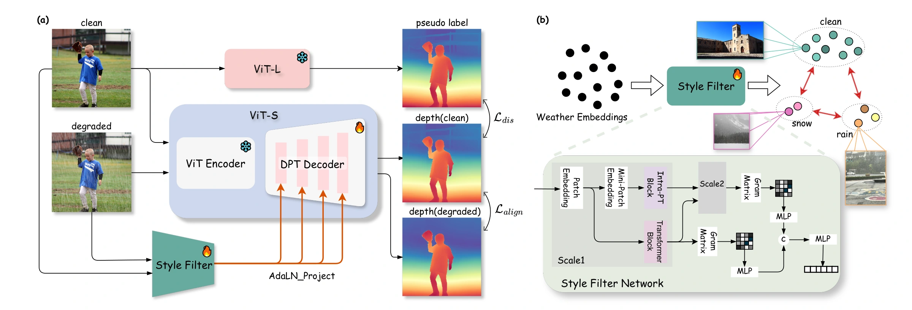
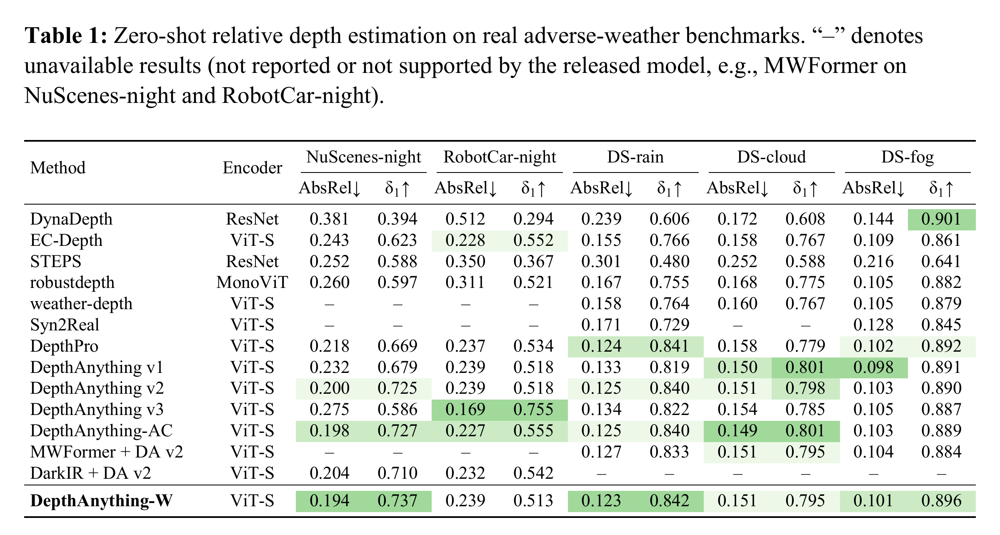

Qualitative Depth Map Comparison
Under Adverse Weather Conditions
Drag the two handles to compare the input, Depth Anything V2, and DA-W.
✨ Abstract ✨
Monocular depth estimation foundation models, such as the Depth Anything series, have achieved remarkable performance across diverse domains. However, they still suffer from critical failures under adverse weather conditions, such as fog, rain, snow, or at night. To address this, we present Weather-Conditioned Depth Anything (DA-W), a framework that explicitly disentangles style from content for weather-robust depth estimation.
Specifically, we introduce a Style Filter trained on a curated mix of real and synthetic degradation datasets to extract content-independent, degradation-aware weather embeddings. This style embedding is then injected into the Depth Anything backbone using a parameter-efficient, zero-initialized adapter. Such a lightweight modulation allows a single unified model to robustly adapt to diverse conditions—including fog, rain, snow, and low-light—while avoiding catastrophic forgetting of its core generalization abilities in normal conditions. We train the adapter using a pseudo-label distillation and alignment strategy.
Our comprehensive experiments demonstrate that our proposed DA-W achieves state-of-the-art robust depth estimation, improving AbsRel by an average of 3.7% on our curated weather benchmarks, while matching or slightly outperforming performance on standard clean benchmarks.
Video
DA-W is an image-based method. This video presents frame-by-frame inference results and does not claim temporal consistency.
🎯 Pipeline 🎯

♣️ Qualitative Comparison ♣️
Each aligned row shows the input beside a baseline-to-DA-W slider.
♠️ Quantitative Results ♠️
Zero-shot relative depth estimation on real adverse-weather benchmarks.

Citation
Proceedings metadata will be added when it becomes available.
@inproceedings{xu2026weather,
title = {Weather-Conditioned Depth Anything},
author = {Xu, Zhaoming and Hu, Chan-Wei and Huang, Kuan-Ru and
Zhu, Zihao and Li, Renjie and Zhou, Yang and Tu, Zhengzhong},
booktitle = {European Conference on Computer Vision (ECCV)},
year = {2026}
}